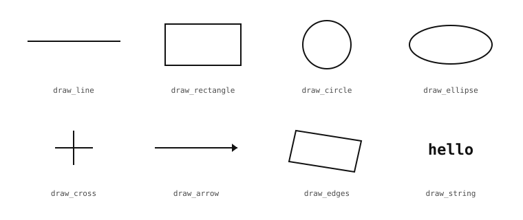

5.6. 繪製形狀與文字¶
對影像做出某種判定的演算法，往往需要讓該判定能被看見。色塊偵測器找到了應用程式所關心的區域；應用程式希望將該區域繪製在影格上，好讓操作人員——或是執行指令碼的開發者——能看見偵測到了什麼。座標轉換將輸入位置對應到輸出位置；對其除錯時，通常意味著在同一張影像上標出這兩個位置。IDE 預覽會在輪詢的當下讀取影格緩衝區中的任何內容，因此讓演算法輸出可見的最簡單方式，就是直接將標註寫入影格緩衝區本身。Image 類別上的繪圖系列方法，正是用於這項工作的工具集。
5.6.1. 基本元素¶
每個繪圖方法都會在影像上放置一種特定類型的標記。這份清單很精簡，並緊扣標註實際需要的幾何基本元素：
draw_line()—— 兩個端點之間的一條直線線段。draw_rectangle()—— 一個與軸對齊的矩形，空心或實心。draw_circle()—— 圍繞某個中心的一個圓，空心或實心。draw_ellipse()—— 一個可任意旋轉的橢圓。draw_cross()—— 在某一點上的一個加號，是標示形心或點選目標的常用標記。draw_arrow()—— 由起點指向終點的一個箭頭。draw_edges()—— 給定四個角點後，繪製任意四邊形的四條邊；是描繪偵測到的標籤或經透視變形區域輪廓的自然方式。draw_string()—— 取自內建點陣字型的文字。
這些方法每一個都會就地修改來源影像，並回傳同一張影像以供串接，遵循先前確立的運算方法慣例。

八種繪圖基本元素，每個面板一種。每個方法製作一種標記。¶
5.6.2. 色彩¶
每個繪圖方法都接受一個 color 引數，用以決定要在每個被繪製的像素中寫入什麼數值。該引數採用的形式取決於影像的格式。對於 RGB565 影像，自然的形式是一個 (r, g, b) 元組，每個通道介於 0 到 255 之間；模組會在寫入前將其封裝為 16 位元的 RGB565 字組。對於灰階影像，自然的形式是單一整數亮度值，從 0（黑）到 255（白）。這些方法也接受格式的原始儲存值——RGB565 的 16 位元封裝字組，或灰階的 8 位元整數——當色彩是在別處計算且已處於儲存形式時，這是較有效率的形式。
省略 color 引數會繪製白色。對於灰階作業而言，這個預設值很方便，因為白色是最大值，在大多數背景下都清晰可辨。但對於 RGB565 除錯疊加層而言，它幾乎總是錯誤的選擇：綠色或紅色通常在相機實際拍到的那類場景中更為醒目，而明確指定色彩也能表達意圖。
5.6.3. 粗細與填充¶
大多數幾何方法都接受兩個旗標，用以決定標記的繪製方式：
thickness=N設定線條寬度（以像素為單位）。預設為1，對大多數疊加層而言已足夠；當標註必須在繁雜的場景中保持可見，或在管線後續階段進一步修改影像之後仍須可見時，較大的值就很有用。fill=True將標記從輪廓切換為實心，以所選色彩填滿每一個內部像素。預設為False。
這些旗標不適用於沒有內部可填充的基本元素——線、十字、箭頭、四邊形——對這些元素而言，只有 thickness 有意義。
5.6.4. 繪製文字¶
draw_string() 使用內建的 8×10 像素點陣字型寫出字元。x 與 y 是第一個字元儲存格的左上角，text 是要繪製的字串，而 color 遵循與幾何方法相同的慣例。該字型涵蓋完整的可列印 ASCII 範圍，且沒有字距微調——每個字元都佔據相同的 8 像素寬儲存格——這讓輸出易於定位。
img.draw_string(10, 10, "blobs: 3", color=(0, 255, 0))
字串可以包含換行符（\n）；每個換行符都會將下一個字元移到下一行的開頭，位於前一行下方十個像素處。scale 引數會以浮點數倍率將每個字元繪製得更大，而 x_spacing 與 y_spacing 會在每個字元周圍加上間距。一小組旋轉／鏡像／翻轉旗標可套用於整個字串，或套用於每個獨立的字元——足以在版面需要時，將文字沿某個角度排列，或貼著非水平的邊緣排列。
5.6.5. 清空畫布¶
這個系列中有一個方法不繪製任何特定標記。它只是將影像的每個像素重設為零：
clear()—— 將每個像素歸零，可選擇限制在某個 ROI 範圍內，或透過遮罩限定範圍。
當應用程式每一影格都從頭合成一個標註時——從黑色畫布開始、繪製新的標註、再將結果交給顯示器——而非疊加在擷取的影格之上，clear() 就是正確的做法。它也是準備一張暫存影像作為遮罩緩衝區最廉價的方式。
剛配置好的影像在建構時就已經是零，因此 clear() 特別適用於在各影格之間重複使用的緩衝區。